Metric Card / Indicator Card
视觉走查与修正记录
本轮发现并修正 11 类问题。两张卡片继续按“设备观测”和“衍生结果”区分业务含义，共用信息层级、间距、材质、数据格式与交互规则。
审查采用实际页面截图、边界场景目测、浏览器尺寸和颜色测量、键盘与触控模拟，并验证了独立安装。241 组是自动化渲染检查数量；目测覆盖下方列出的代表界面，不将两者混称为逐张人工验收。
审查标准与完整范围
| 维度 | 覆盖内容 | 本轮验收原则 |
|---|---|---|
| 信息结构 | 图标、标题、副标题、右上角入口、主值、比较、说明、图表、时间、质量、关联信息、展开详情 | 主结果首先可读；标题说明“是什么”，副标题说明作用对象；历史入口属于操作；来源与计算依据进入详情。 |
| 几何与层级 | 四边内距、图文间距、头部到正文、数字基线、单位、分隔线、圆角、阴影 | 默认外壳内距 24px、图文间距 12px、头部到正文 24px。外壳和圆形图标凸起，正文、图形、表格及元信息平面呈现。 |
| 文字与颜色 | 标题、数值、单位、长名称、长标识、说明、语义色、对比度 | 普通文字至少 4.5:1，大字与必要图形至少 3:1；颜色需有文字辅助。长数字不从中间换行，长说明不越界。依据 WCAG 1.4.3、1.4.11。 |
| 数据可视化 | 数值、趋势、范围、枚举/布尔、文本、结构化结果表 | 单位和比较基准完整；趋势给出实际时刻与缺测信息；范围有量程、目标与当前位置；表格保留列含义与数据精度。 |
| 数据状态 | 0、false、负数、超界、空文本、空结果表、无记录、无效、估算、不确定、未知质量、陈旧、离线、加载、失败 | 不同状态不混用。有效数值与质量分别表达；不把离线等同于历史值无效，不把计算时间等同于输入数据新鲜。 |
| 交互 | 历史入口、详情展开、悬停/按下、键盘焦点、横向表格滚动、触控尺寸 | 保持轻微明暗反馈；展开状态靠箭头和内容表达；键盘可操作且焦点可见。项目采用 40px 触控入口，WCAG AA 的最低尺寸标准为 24px 并有例外，见 2.5.8。 |
| 适配与偏好 | 深浅主题、505/288px 卡片、320px 视口、20px 字号、圆角和内距、强制颜色、减少动效 | 卡片正文重排，不产生页面横向溢出；宽表格在局部滚动。参照 WCAG 1.4.10。 |
| 交付一致性 | 组件页面、目录缩略图、Theme、设备详情、独立安装 | 业务组件和网站使用同一实现及 Graphite 样式；缩略图的图标语义与实际组件一致。 |
发现的问题与修复
P101 · 头部间距被重复计算
头部外边距和容器间距叠加，24px 变成 48px。已由内部容器明确拥有布局，Metric 与 Indicator 使用自己的业务标识时仍只保留一份间距。12/24/40px 三档配置均实测一致。
P102 · 历史按钮在窄卡片中掉到标题下面
一个紧凑操作被当成多项状态区换行，形成独立、含义不清的一行。已保持在右上角，与左侧 40px 身份图标的中心对齐；长标题和副标题自行换行。
P103 · 长数值、比较和说明破坏阅读顺序
长数值会从数字中间断开；比较的箭头、值和基准挤成碎片；连续说明文字越过卡片边界。已保留完整数位，按长度和容器宽度调节字号；比较值成组，基准可换行；长说明与标识在卡内重排。极长数值保留局部滚动作为兜底。
P104 · 浅色正向小字对比度不足，质量状态表达不一致
原正向颜色在浅色卡片上的对比度约 4.28:1，低于普通文字要求。已增加用于文字的正向色；Indicator 的无效、估算、不确定和未知质量与 Metric 使用一致的语义色。受测文字最低为 5.22:1（四舍五入），不对任意自定义颜色作此保证。
P105 · 范围图留白失衡，最小值没有位置标记
主值移出半圆后，图形留下大块空心区域；位于最小值时，填充长度为零，当前位置不可见。卡片内改为紧凑位置轨道：量程、目标区间、当前位置各有表达，最小值仍有标记。目标外和量程外用文字区分。轨道、目标边界与位置标记均通过至少 3:1 的对比度检查。
P106 · 日期时间拆散，跨年信息丢失
原窗口可能在日期或时钟中间换行，且没有年份。已保留年份与 UTC；日期、时钟是各自完整的文字单元；同日窗口复用日期，跨日保留两端日期。观测采样、接收、计算与输入窗口保持独立。
P107 · 表格数值难比较，窄屏内容被拆碎
数值列与文字列全部左对齐，长类别在单词中间折行，横向内容没有提示。已将数值列及其表头右对齐，支持列精度；保留类别和数字的完整性；超宽时提示滚动，键盘可滚动，表头在纵向滚动时保留。
P208 · 空文本没有可辨认结果
合法空字符串原来显示为一块空白。现在明确显示“空文本”，与 null 的“暂无数据”、空数组的“本次结果为空”分别表达。
P209 · 趋势缺少实际时刻与可见缺测说明
原来只有“最近若干分钟”的标签，断线含义主要写在辅助标签中。已补实际起止时刻、可见的“含缺测”说明，并扩充图形的可访问描述，包含有效点数、极值和单位。保留断线，不补造连续曲线。
P210 · 详情触发区和状态反馈不完整
原触发区只包住文字，依赖默认三角和默认焦点。已改为整行至少 40px，使用明确箭头和焦点轮廓；悬停、按下只轻调文字明暗，展开旋转箭头。Enter / Space 可展开和收起。
P211 · 衍生指标图标暗示了不存在的 AI 来源
原星光图标容易把均值、规则分级等所有衍生结果都理解成 AI 生成。已改为计算符号，并同步目录缩略图；实际算法、版本和输入仍由内容说明。
前后对照
Metric：标题与正文关系、趋势时间
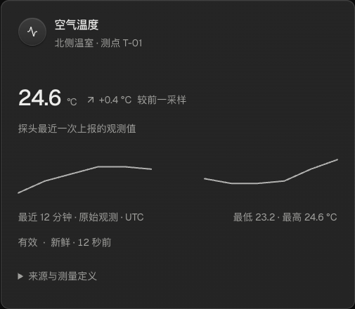
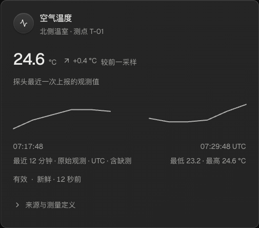
范围：位置、目标与边界
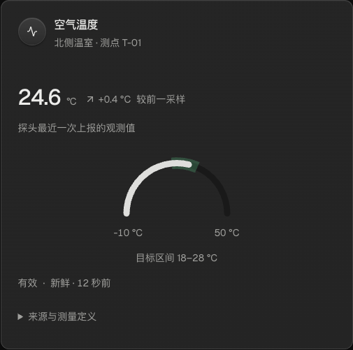
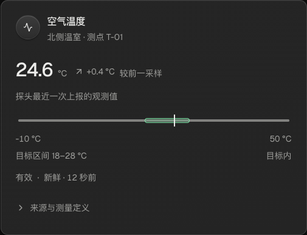
Indicator：结果表与计算依据
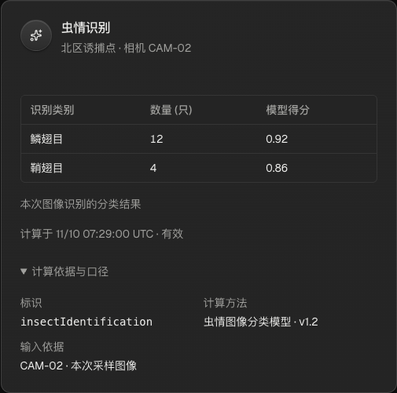
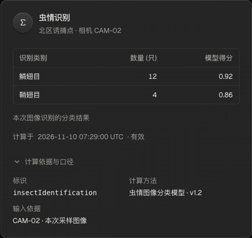
适配与边界复查
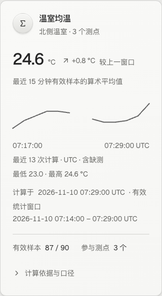
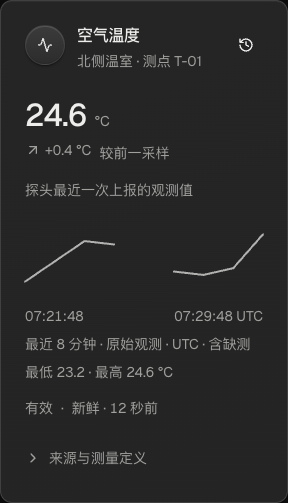
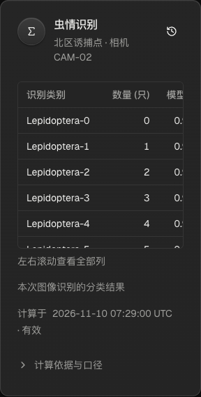
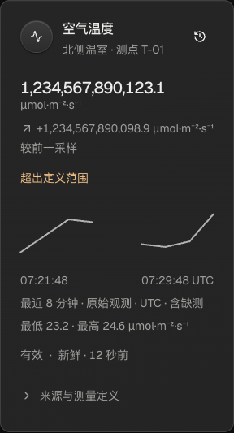
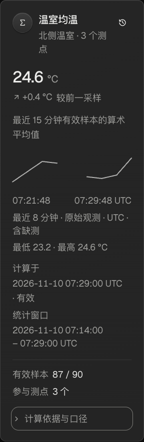
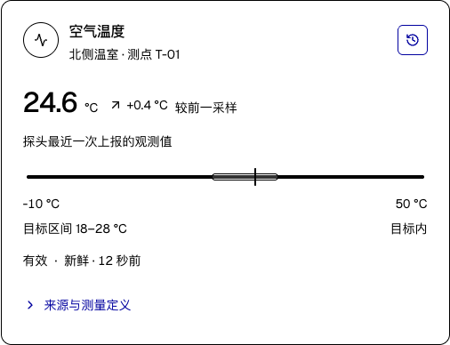
验证结果与边界
- 50 个数据/呈现/状态场景 × 2 种主题 × 2 个卡片宽度，共 200 组；大字号及详情展开 32 组；内边距与圆角 9 组。合计 241 组，未检测到正文越界、页面横向溢出或默认文字对比度不达标。
- 浅色范围轨道最低对比度 3.26:1；受测焦点轮廓最低 3.71:1。触控历史入口 40×40px，详情入口至少 40px 高。悬停与按下保留轻微明暗区别。
- 缺测、单点、常量、无历史、零值、false、无效质量、离线和陈旧记录均已覆盖。未执行真实设备采样或指标计算。
- Theme 中两张卡片、设备详情中的三张 Metric Card、组件展示页及目录图标已复查。干净安装创建 11 个文件，类型检查、构建及 1440/768/390/320px 深浅主题浏览器检查通过。
- 项目 40 项测试、类型检查、生产构建通过。生成的站点与安装包已同步到本地工程；本轮未执行发布。